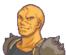

Support Rank C

きゃー山賊ー！

ああ 山賊だよ
悪かったな
・・・なあおい
芸ってのは もうかるのか？
へ？
おれもいつまでも山賊なんて
やってらんねえしよ
なんか 金になること
ねえかと思ってさ
ん～・・・
あたしは そういうの
よくわかんないけど
な なあ
おれにもできる芸ってねえか
ん～・・・あたしが知ってるのは
やっぱ踊りかなあ
あんただったら・・・
あれなんかいいかな～
あ あるのか？
頼む 教えてくれ！
ん～
どうしよっかな～・・・
じゃ
また今度教えてあげる
またね～
あ ああ・・・
頼むぜ本当に
Support Rank B
あー！
それじゃダメダメ
なんでだ？
こういう踊りだったろ
こうして・・・こう回って・・・
こうだろ？ 違うのか
動きをなぞっただけじゃ全然ダメダメ
愛想がないもん
そんなこわい顔してちゃ
お客さん逃げちゃうよ
ほっとけ！
この顔は生まれつきだ！
ふーん・・・
そういう反抗的な態度とるんだ
じゃあもう
教えてあげなーい
ぐぐっ・・・
わ わかった 愛想だな
芸はまず笑顔 笑顔
ほらほら
笑って笑って
にこ～～
わ 笑やいいんだろ
笑や・・・
にいいい・・・
あははははっ！
てめえが笑うなっ！
あとは色気かな～
うん 色気が足んない
い 色気ってな・・・
おれは男だぞ
おれがこの顔で色気出したら
不気味すぎるだろうが！
ふーん・・・
そういう態度・・・
わかった！ わかったよ！
もう何でもやってやる！
ほら！ こうだ！
これでどうだ！
そうそう いい感じ
あははは～
・・・こいつ絶対
おれで遊んでやがる・・・
Support Rank A
おい！
ララムてめえっ！
何？
てめえ おれを
からかって遊んでたろ！
芸を教えるとか言って
いい加減なこと吹き込みやがって！
お前の言う通り
踊ったらなあ・・・
他の奴に
大笑いされたんだ！
へえ
よかったじゃない
何だと！？
おれはなあ・・・！
あのね・・・ 芸ってのは
人を楽しませるものなの
どんなにうまく踊れたって
お客さんが楽しくなきゃ意味ないの
む・・・・・・
感動してもらおうと思ったら
心の底から泣かなきゃ
笑ってもらおうと思ったら
バカになんなきゃ
人に楽しんでもらえたら
恥かいたってうれしいよ あたし
・・・・・・
くそっ・・・
なんか納得しちまったぞ・・・
・・・けど おれには
やっぱ向いてねえや
芸ってのは
大変なもんだな・・・
あはは
でも良かったよ あんたの踊り